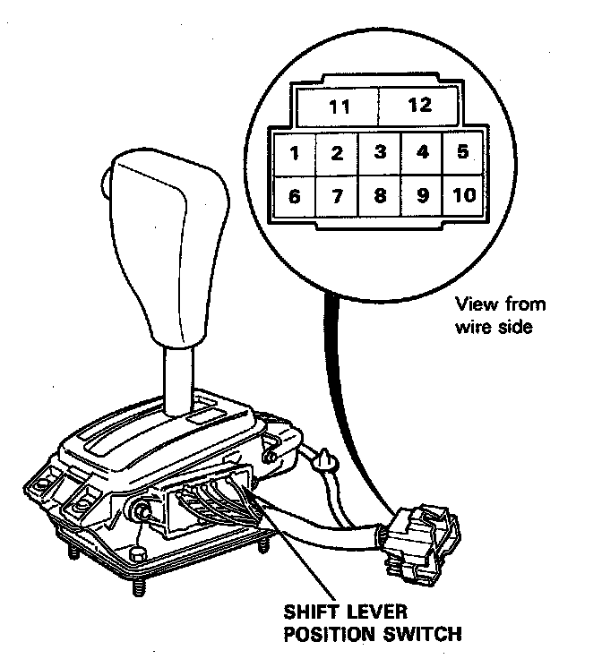

Automatic Transmission
Backup Light Switch Test

1 Test back-up light switch by shifting the shift lever to "R" and turning the ignition switch ON.
2. If the back-up lights do not go on, check the No.1 (1OA) fuse in the under-dash fuse box and the backup light bulbs in the taillight assembly.
3. If the fuse and bulbs are OK, remove the center console, then disconnect the 10-P connector from the shift lever position switch (back-up light switch).
4. Check for continuity between No.2 and No.3 terminals. Move the lever back and forth without touching the push button at the "R" position, and check for continuity within the range of free play of the shift lever.
- If there is no continuity within the range of free play, adjust the installation position of the shift lever position switch.
- If there is continuity, but the back-up lights do not go on, check for:
- Poor ground
- Hatchback: G521, G601
- Sedan : G621
- An open in the YEL/RED or GRN/BLK wire.